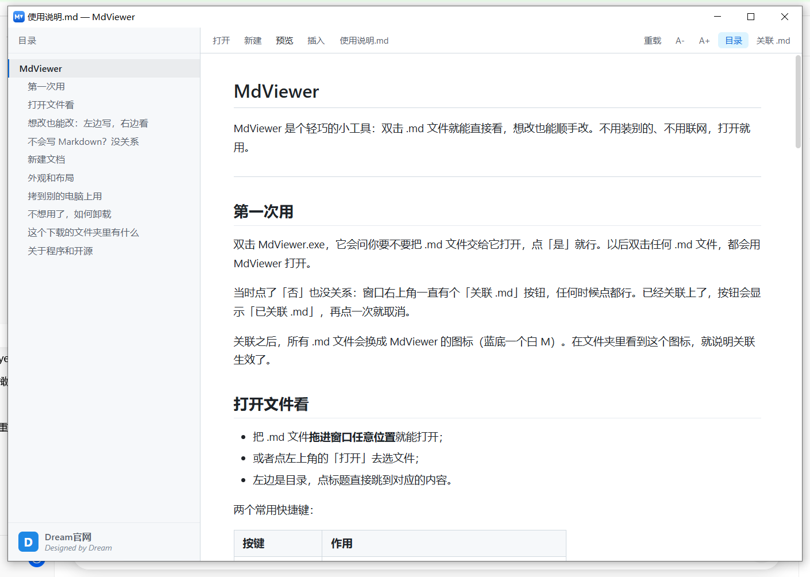
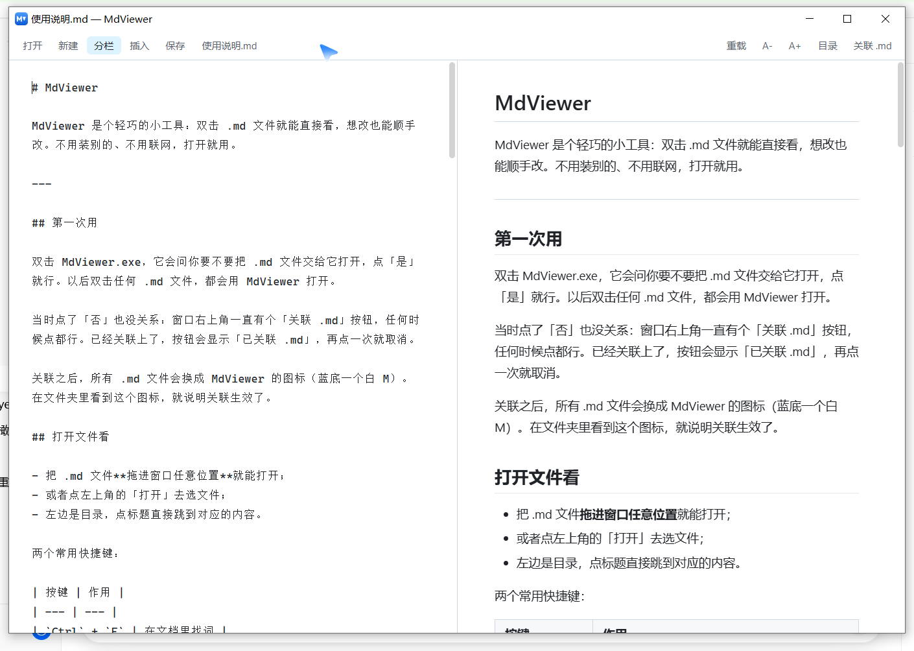
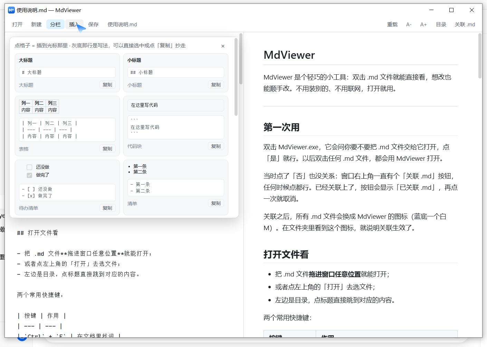

点格子 = 插到光标那里 · 灰底那行是写法，可以直接选中或点「复制」抄走
FEATURES
为「简单」做的整套取舍
每个功能都围绕一件事：让小白也能快速上手，不用记语法。
双击即看
关联之后，双击任何 .md 文件都用 MdViewer 打开。拖进窗口、点「打开」也行，三条路都通。
单文件离线
一个 MdViewer.exe 就够，界面打包在里面。不联网、不装别的、不留后台，打开就用。
左写右看
分栏模式：左边写原文，右边实时出排版，改一个字右边立刻跟着变，不用来回切。
新手不用记语法
15 种带预览的插入小方块，看中哪个点一下就插进去；打一个 / 也能呼出；回车自动续写清单。
目录与查找
目录自动生成、点标题直接跳到对应内容；Ctrl + F 找词，Ctrl + 滚轮随意放大缩小。
改完存回原文件
Ctrl + S 直接存盘。有没保存的改动，文件名前会亮小圆点，关窗口时会先问你，不会弄丢。
MODES
预览 · 分栏 · 全屏写
顶栏按钮写的就是现在的显示方式，点一下（或按 Ctrl + E）就在三种之间轮换。

预览
看排版最舒服的状态。左边目录，点标题直接跳。

分栏
左边写、右边看，改一个字右边立刻跟着变。
全屏写
只看编辑区，专心打字，不被打扰。
预览 分栏 全屏写 回到预览
INSERT
15 种插入方块，也是语法小词典
每块画的都是插进去之后长什么样；灰底那行是 Markdown 原文，点「复制」一键抄走。

程序里的插入面板 —— 点一下就插到光标位置
SHORTCUTS
常用快捷键
用得多的几个，记住一个算一个。
| 按键 | 作用 |
|---|---|
| Ctrl + O | 打开文件 |
| Ctrl + N | 新建文档（带一份现成骨架） |
| Ctrl + E | 预览 / 分栏 / 全屏写 轮换 |
| Ctrl + S | 保存，存回原文件 |
| Ctrl + F | 在文档里找词 |
| Ctrl + 滚轮 | 放大 / 缩小文字 |
GET STARTED
拿走即用
整个下载文件夹就三个文件，程序本体只有一个 exe。
MdViewer.exe
程序本体，界面也打包在里面，单文件就能跑。
使用说明.md
就是这份文档，打开它就能在 MdViewer 里看。
撤销关联.reg
不想用了，双击它把 .md 的打开方式还回去。
运行环境：Windows 10 / 11。第一次跑需要微软的 WebView2 运行时和 .NET 8 桌面运行时，缺哪个程序会直接告诉你怎么装，照着做就行。
- 提示「没有可用的 WebView2 运行时」—— 到微软官网搜 WebView2 Runtime 下载，装 Evergreen Bootstrapper。
- 双击毫无反应、连框都不弹 —— 多半是没装 .NET 8，装 Desktop Runtime（x64）即可。
- 出错信息会另存一份在程序旁边（MdViewer-启动失败.log），方便转给别人看。
ABOUT
关于程序与开源
「好的工具应该像空气一样自然存在，让人专注于创造本身。」
—— Dream
开源致谢
程序依赖几个开源小工具（marked、highlight.js 及其配色），版权归各自原作者，声明已随程序保留。除此之外，界面设计、文件关联、模式切换、插入面板、自动续写清单等，全部由 Dream 独立创作。